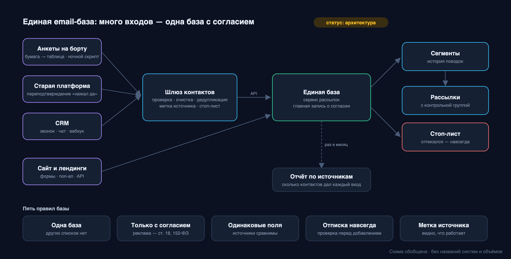

Рабочий кейс · 5 из 13
Единая email-база и стратегия рассылок
- Mindbox
- DashaMail
- Google Apps Script
- Bitrix24
- SQL
Компания: туроператор речных круизов. Статус: архитектура и исследование, запуск — после юридического согласования.

Схема обобщена: без названий систем компании и объёмов базы.Задача
Контакты клиентов разбросаны по бумажным анкетам на борту, старой платформе рассылок, формам сайта и CRM. Повторные покупки — главный резерв выручки, но вернуть туриста нечем.
Что сделано
- Аудит: откуда приходят контакты, какие согласия собраны, чего не хватает для рекламных рассылок (152-ФЗ, ст. 18 закона «О рекламе»).
- Архитектура: 4 потока (анкеты, миграция со старой платформы, сайт и лендинги, CRM) → шлюз контактов → одна база в новом сервисе рассылок. Фазы 0–5, критерии готовности каждой.
- Карта сбора почт: источники по этапам пути клиента, 15 цепочек, матрица «откуда пришёл × где оставил почту», 23 механики сбора; карта-воронка «площадки → куда приходят → заявка или почта → CRM / сервис рассылок» с конверсиями по данным веб-аналитики и бронирований.
- Новая аудитория: портрет целевой аудитории, площадки под неё и новые цепочки привлечения.
- Сегментация: сегменты по истории поездок для таргетированных писем.
- Механика удержания: концепция игры-коллекции для повторных рейсов (письма + «паспорт» на борту), ID игрока — номер карты лояльности.
- Метрики успеха: доля туристов с контактом и согласием, новые подписчики и конверсия в подписку по площадкам, «из подписчика в покупателя» за 90 дней, доля повторных покупок, выручка с рассылок с контрольной группой.
Чему научился
Сначала согласие и юридически чистая база, потом рассылки. Отказался от отправок, пока нет отдельного согласия на рекламу.